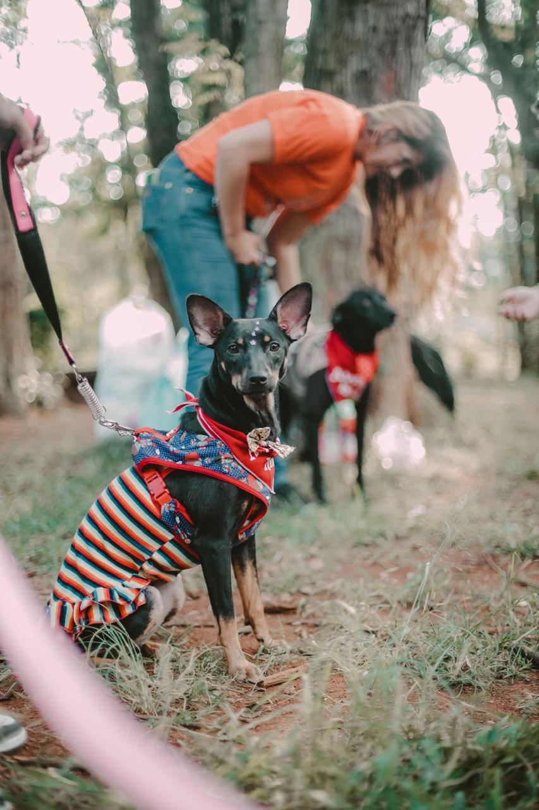

About Us
Paws & Whiskers Animal Rescue is committed to improving the lives of vulnerable animals through rescue, rehabilitation, and responsible rehoming.
Our Story

Paws & Whiskers Animal Rescue was established to provide vulnerable and abandoned animals with a safe place to recover and receive the care they need.
We believe every animal deserves compassion, protection, and the opportunity to find a loving forever home.
Our Mission
Our mission is to rescue, rehabilitate, and rehome vulnerable animals while promoting responsible pet ownership and animal welfare.
Our Vision
Our vision is a community where every animal is treated with kindness, receives proper care, and has the opportunity to live in a safe and loving environment.
Our Values
- Compassion towards all animals.
- Responsible animal care and ownership.
- Respect for animals and the community.
- Commitment to animal welfare.
- Honesty and accountability.
Our Rescue Process
We focus on providing animals with the support they need before finding suitable homes.
- Rescue animals in need of assistance.
- Provide shelter, food, and veterinary care.
- Support their rehabilitation and recovery.
- Identify suitable adoption opportunities.
- Help animals transition into loving homes.
Community Education
We encourage responsible pet ownership by promoting animal welfare awareness, proper care, and the importance of treating animals with kindness.
Our Volunteers
Volunteers play an important role in supporting our rescue activities. Their time and dedication help provide animals with care, attention, and support.
Volunteer With UsMake a Difference
You can help us improve the lives of animals by adopting, volunteering, or supporting our rescue work.
Adopt an Animal Support Our Rescue